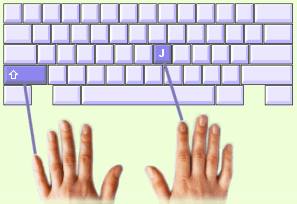

In dieser Lektion werden Sie die Großbuchstaben lernen. Dabei werden Sie die Umschalttasten benutzen.
Sie schreiben Großbuchstaben mit beiden Händen. Mit der einen drücken Sie die Umschalttaste und mit der anderen den betreffenden Buchstaben. Dabei ist es wichtig, beide Tasten gleichzeitig zu drücken.
Die Umschalttasten werden immer mit den kleinen Fingern geschrieben.
Beispiel: Das große J |
 |